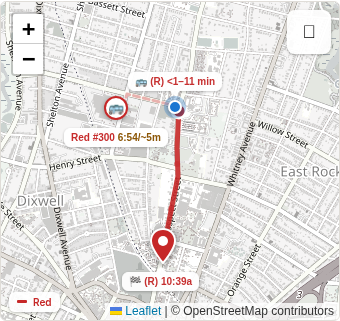

Current mini map
This is the reference for every option below.
Waiting time reads elapsed / usual total wait. For example, 6:54/~8m means waiting 6 minutes 54 seconds; usually about 8 minutes in total.

No saved options yet. Use “Save” on any option.